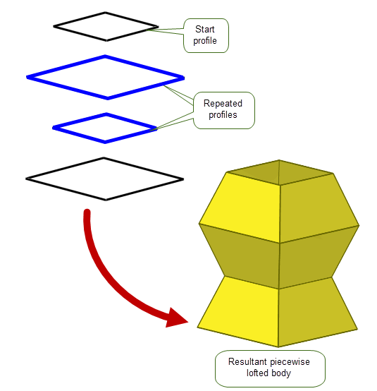

| |
Building Bodies from Profiles |
| <<< Convergent Modeling | Chapters | Blending >>> |
Parasolid provides many elementary functions for creating bodies. Some tools, such as those mentioned in Chapter 3, “Model Structure”, can create primitive bodies from scratch. You can use other tools to create more sophisticated bodies using only a minimum of starting information.
This chapter describes the functionality available for creating bodies based on wire or sheet profiles, such as those that can be created using the techniques described in Chapter 6, “Working with Sheets and Wires”. It also contains information on creating swept bodies from solid profiles.
Bodies created from profiles may be either sheets or solids, depending on the nature of the operation and the profiles used. Generally, a sheet profile creates a solid body and a wire profile creates a sheet body.
Parasolid can extrude a profile in a linear direction to create a new body. You can define how far the profile is extruded by specifying exactly where the extrusion should start and end. This can be either:
Figure 9-1 Extruding a profile to create a new body
You can create a body by spinning a profile about an axis, as shown in Figure 9-2. Spinning functionality lets you:
You can also spin profiles on an existing body to create new features.

Figure 9-2 Using spin to create new bodies and features
Parasolid’s extrusion and spinning functionality is complemented by sweeping, in which one or more profiles are swept along a path using possibly one or more guide wires to produce a new body. The path and guides are specified as wire bodies; unlike extrusion, the path does not need to be linear. Figure 9-3, and Figure 9-4 show how bodies can be created by sweeping.
Figure 9-3 Sweeping profiles along a path to produce a body
Figure 9-4 Sweeping a profile along a path with a G1 discontinuous guide wire
Parasolid lets you control the orientation, size and rotation of profiles in sweep operations, leading to a variety of different effects, as shown in Figure 9-5.
Figure 9-5 Varying (a) the orientation, (b) the size and (c) the rotation of the profile
You can also combine these effects, giving you a vast range of possibilities. Parasolid provides particularly strong support for creating helices by sweeping profiles, giving you control over the amount the pitch and taper varies along the extent of the sweep, as shown in Figure 9-6.
Figure 9-6 Creating a tapered helix using sweep rotation and size controls
Parasolid’s sweeping functionality also includes many controls to let you, for example:
Figure 9-7 Sweeping profiles with face clamps

Figure 9-8 Locking the orientation of the sweep to a set of faces
Figure 9-9 Specifying the type of corner to produce in a sweep operation

Figure 9-10 The effect of locking the direction of a sweep
Figure 9-11 Creating a series of cross-section profiles
In addition to sheet and wire profiles, Parasolid allows you to sweep a solid body along a path, as shown in Figure 9-12. This function can be used to construct bodies that represent regions to be cut from another solid body using a machine tool.
Figure 9-12 Sweeping a solid tool profile along a path
You can also use it to specify any faces that will not be involved in a subsequent cutting operation, to generate a simpler set of swept surfaces for the resulting body as shown in Figure 9-13.
Figure 9-13 Specifying non-cutting faces on a tool body
The supplied tool does not have to touch the path: you can choose whether to place the tool on the path prior to the sweeping, or whether to sweep the tool relative to a distant path. This can lead to very different results, as shown in Figure 9-14 and Figure 9-15.
Figure 9-14 Sweeping a tool that lies on the path

Figure 9-15 Sweeping a tool that lies off the path
You can specify the edges of the path that are spun around a supplied axis as part of the sweeping operation as shown in Figure 9-16. This is useful in lathing operations where it can help improve the quality of the sweep.
Figure 9-16 Specifying path edges in the sweeping operation
You can also choose to perform both the sweep and the boolean operation in one function call. This can reduce the complexity of modelling operations such as simulating lathing operations, where the volume of interest is often the volume remaining after a subtraction operation. Figure 9-17 shows two examples where you can either subtract or intersect a specified volume to create a result body.

Figure 9-17 Performing boolean operations with a swept tool body
Parasolid supports the process of lofting, in which you create a sheet or solid body by fitting surfaces through a series of profiles. Unlike extrusion , lofting involves the use of any number of profiles.
Figure 9-18 Creating a lofted body using several different profiles
There are many ways that you can control the final appearance of a lofted body. For example, you can:
Figure 9-19 Matching vertices across adjacent profiles to create different bodies
Figure 9-20 Using degenerate profiles in a loft
Figure 9-21 Controlling the shape of a lofted body
Figure 9-22 Using a guide curve to control loft shape
Figure 9-23 Piecewise lofting with repeated profiles
As with sweeping, you can combine these options, making Parasolid lofting a powerful tool for creating free-form bodies using only the simplest of starting points.
Parasolid provides functionality for adding protruding (pad) or indented (pocket) emboss features to a target body. These operations can be applied globally, or locally to a selection of faces, and the features created can either be attached to the target body or returned as a separate body. The shape of emboss features is described using supplied profiles.
Figure 9-24 Creating pad and pocket emboss features on a target body
A fundamental part of Parasolid’s emboss functionality is creating sidewalls, as shown in Figure 9-24, which is done automatically for emboss features. Parasolid can construct a sidewall using one of following methods:
In each case, the geometry of the sidewall is formed by a set of ruled surfaces that pass through the boundary of the profile. An example of a pad emboss feature with sidewalls tapered at different angles is shown in Figure 9-25.
Figure 9-25 Pad emboss feature with tapered sidewalls using different angles
As well as these methods of internal construction, you can supply a sidewall yourself.
| <<< Convergent Modeling | Chapters | Blending >>> |